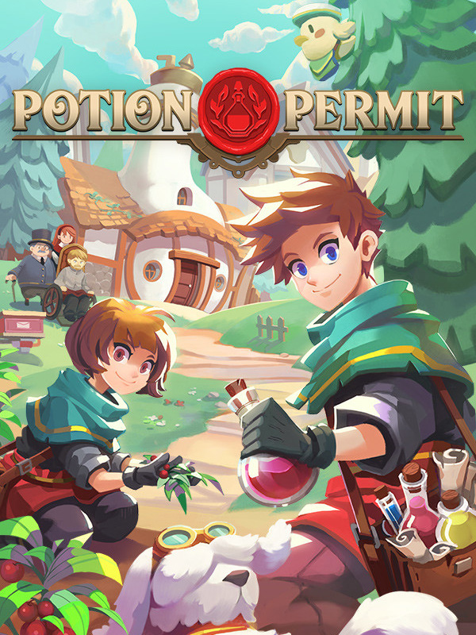

Potion Permit
Potion Permit
Details
|  | |
| Playtime | 1d 0h 27m 0s |
| Last Activity | 2024-08-14 14:49:34 |
| Added | 2024-06-30 9:48:14 |
| Modified | 2024-06-30 9:48:26 |
| Completion Status | Played |
| Library | Steam |
| Source | Steam |
| Platform | PC (Windows) |
| Release Date | 2022-09-22 |
| Community Score | 34 |
| Critic Score | 70 |
| User Score | |
| Genre | Adventure Hack and slash/Beat 'em up Puzzle Role-playing (RPG) Simulator |
| Developer | MassHive Media |
| Publisher | PQube |
| Feature | Single Player |
| Links | Steam Epic Official GOG Discord Twitch |
| Tag | |
Description
The town of Moonbury has always been wary of the advances of the outside world, preferring to rely on their traditional methods of healing. Until one day, when the mayor's daughter falls ill, and the local witch doctor can do nothing to help her, they are forced to look outside their small community for help.
The Medical Association decides to send their most accomplished chemist - you - to help cure the mayor's daughter and convince the residents of Moonbury of the wonders of modern alchemy. Gain their trust and tend to each person when they fall ill in this open-ended sim RPG.

The Medical Association decides to send their most accomplished chemist - you - to help cure the mayor's daughter and convince the residents of Moonbury of the wonders of modern alchemy. Gain their trust and tend to each person when they fall ill in this open-ended sim RPG.
- Take care of residents. Moonbury has around 30 unique inhabitants who will occasionally fall ill and call for your aid. Sick residents will have their schedules interrupted while they recuperate in bed.

- Diagnose symptoms and find a cure! Hmm... a low heart rate and a bloated liver. Shoulder cramps, perhaps? No, these are sure signs of burning lungs. This patient has been consuming too much gelatin! Easily remedied; you'll just need to craft some Minty Goblet.
- Gather ingredients out in the world. Once you've decided on a potion, ointment, or salve, gather ingredients from the surrounding environment using your tools. Upgrade your hammer, axe, and sickle for new swings and attacks to help with your day-to-day tasks. Watch out for changing weather conditions! You may find yourself caught out in the rain, a freezing blizzard, or even the baking heat of a desert.

- Confront nasty monsters for their materials. Sometimes you won't be able to gather the materials you need as easily as harvesting a berry bush, and you'll need to turn your trusty tools into weapons to collect materials from the monsters prowling the nearby wilderness. Combat is in real-time and, since you're a chemist, you'll be able to brew various concoctions to buff yourself or inflict status ailments on your adversaries, as well as various tools to aid you.
- Brew remedies in your cauldron. The ingredients you gather can be mixed in your cauldron to brew medicine, vitamins, and more. As you become more experienced, higher-level recipes will become available, requiring more ingredients but bestowing stronger effects. Enhance your cauldron to concoct more ingredients into your recipes for these more advanced remedies.

- Build relationships with the townsfolk. It'll take a little while, but your patients' health will be much better thanks to your efforts. Your reputation with them will increase, and they'll open up to you a little more. You may even find yourself growing particularly close to certain bachelors or bachelorettes.
- Upgrade the town and surrounding areas. Building relationships with townsfolk increases your approval rating allowing you to improve the area by improving public buildings and expanding the explorable areas around the town. You can also craft and buy new furniture to give your home a personal touch!

- Enjoy the peace and quiet of the countryside. In the downtime between treating the community's ailments, you'll be able to freely explore in and around Moonbury. Get to know the inhabitants a little better, take a rest in the tavern, or go fishing to catch something for dinner. Moonbury is a delightfully charming location where time seems a little slower and life is just a little more relaxed than the big city. While the lighting will change throughout the day, with the bright sun streaking across the meadows in the morning and street lamps illuminating the town in the early evening, there are no time limits for game objectives. You are free to go at your own pace and take it easy.
- Spend time with a faithful companion. You didn't relocate to Moonbury alone! With you every step of the way is your loyal dog companion. Your pet can help you locate hidden items and point you in the direction of residents as they go about their day.